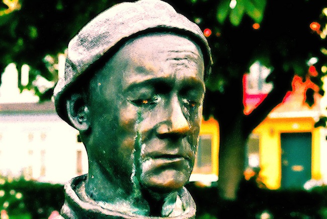

Mere
"Mere" version 1.0.
Hallelujamusik track 02.
Tekst er skrevet 2012-07-03 af
Lasse Steen Bohnstedt.
Visse rettigheder forbeholdt. *)
Obs! Rettighederne til den originale sangs melodi og tekst
tilhører deres respektive ejere, og jeg tjener intet på oversættelsen.
Oversættelsen præsenteres udelukkende her for din private fornøjelse og under
"fair use" klausulen.
Om at ville have mere.
Audio
 Du kan afspille
Demo 1 af "Mere" på youtube.
Du kan afspille
Demo 1 af "Mere" på youtube.På trods af, at jeg ikke har brugt særlig lang tid på indspilning, tracking og mix, er jeg ret godt tilfreds med den aktuelle version 1.0.22 mix 2.
|
 |
Tekst
| 1. |
Jeg har altid villet have mere. Hvad som helst jeg ikke har. Mere af alt, kan ikke få nok. Jeg kan ikke stoppe. Planlægger mit liv ihjel, men flygter altid fra mig selv. Kunne ikke føle nok i dag, i morgen må jeg have mere. Mere sprut, mere drøm, mere seng, mere strøm, mere lyst, mere løgn, mere sut, mere love, mere frygt, mere fest, mere bid, mere frisk, mere sol, mere skind, mere blitz, mere sex. Men lige meget, hvor meget mere, jeg kræver, kan jeg se, jeg kan ikke få mere håb om liv og ikke mere tid. Ikke mere tid. |
2. |
Jeg vil have Himlen herned. Jeg vil have lynild og torden. Jeg vil have blod i stedet for sved. Jeg vil have vidundere hver morgen. Jeg vil gå på vandet. Tage til Månen retur. Giv mig alt det, Giv mig det nu! Mere sprut, mere drøm, mere strøm! Mere lyst, mere løgn, mere love! Men lige meget, hvor meget mere, jeg kræver, kan jeg se, jeg kan ikke få mere håb om liv og ikke mere tid. Ikke mere tid. |
2012-07-22
Teksten "Mere" version 1.0